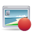

Multimedia
Hier werden Wiki-Artikel gesammelt, in welchen erklärt wird, wie man verschiedene Video- und Audioformate abspielen kann und welche Programme sich für welchen Zweck eignen. Außerdem finden sich hier weitere Anleitungen zur Bearbeitung und Erstellung von Musik und Filmen.
| Wiedergabe-Software | |||||
 | AudioPlayer Abspielen von Audiodaten | VideoPlayer Videowiedergabe | Media-Center Multimedia-Software fürs Wohnzimmer | ||
| Radio Radio hören |  | TV Fernsehen unter Ubuntu | Multimedia-Wiedergabe weitere Artikel zur Multimedia-Wiedergabe | ||
| Bearbeitung und Verwaltung | |||||
| Tonstudio Klangerzeugung, -aufnahme und -bearbeitung | Videobearbeitung Editieren und Aufbereiten von Videos, Verarbeiten von Transportströmen | Diashows erstellen Bilder anhand eines Videos präsentieren | |||
| Audiodateien umwandeln Audiodateien von einem Format in ein anderes umwandeln | Videodateien umwandeln Programme zum Konvertieren von Videodateien | Sonstige Bearbeitung weitere Artikel zur Multimedia-Bearbeitung | |||
| Rippen und Brennen CDs und DVDs rippen und brennen |  | Screencasts den Bildschirminhalt als Video aufzeichnen | Verwaltung Tag-Editoren und Multimedia-Verwaltung | ||
| Weitere Kategorien | |||||
| Noten und Akkorde Notensatz und Tabulaturen | Netzwerk und Internet Multimedia im Netz | Hardware Software für Multimedia-Hardware | |||
Media-Center¶

Kodi - ein Media-Center mit großem Funktionsumfang
MediaElch - MediaManager für Kodi
MythTV - Festplattenrekorder, der sich um weitere Multimedia-Funktionen erweitern lässt
Plex Media Server - Allround-Medienserver
Multimedia-Wiedergabe¶

Blu-Ray wiedergeben - Blu-Rays unter Linux anschauen
Codecs - Unterstützung für verschiedene Multimedia-Codecs hinzufügen
DVD-Wiedergabe - Voraussetzungen
GStreamer - kurze Einführung in das GStreamer-Multimediaframework
MIDI - Abspielen von MIDI-Dateien
Mixer - Mixer, Mischpulte, Equalizer und Effekt-Racks
Streaming - Audio- und Videostreams aus dem Internet abspielen
Videograbbing - Ansehen und Aufzeichnen von analogen Video-Quellen
Video-Dekodierung beschleunigen - GPU einer Grafikkarte zur Dekodierung von Videos einsetzen
VidStarter - Skriptsammlung, um Videos aus dem Internet wiederzugeben
Multimedia-Bearbeitung¶
Format Junkie - konvertiert Video-, Audio- und Bildformate
FF Multi Converter - wandelt neben Audio-, Video- und Bildformaten auch Dokumente um
movie thumbnailer - erzeugt Vorschaubilder von einem Video
MP3Gain - Lautstärke-Niveau von Audiodateien anpassen
mp3splt - Dateien im Format MP3 oder Ogg ohne Recodierung schneiden
mp3wrap - MP3-Dateien verlustfrei Zusammenführen
Spek - Anzeige des akustischen Spektrums (Spektrogramms) von Audiodateien
Überprüfung MP3-Sammlung
 - MP3-Sammlung auf fehlerhafte Daten überprüfen
- MP3-Sammlung auf fehlerhafte Daten überprüfen
Rippen und Brennen¶
Brennprogramme
Audio-, Video- und Daten-CD/DVDs brennen CDs rippen
Audio-CDs auslesen und komprimieren (OGG, MP3) CD-Images
ISO-Images ins Dateisystem einbinden DVDs rippen
Video-DVDs auslesen und komprimieren DVD-Authoring
Software zur Erstellung von Video-DVDs DVDs kopieren
Video-DVDs kopieren VCD erstellen - eine Video-CD erstellen
Verwaltung¶
Medienverwaltung
Programme zur Verwaltung einer MediensammlungAudio Tag Tool - Verwaltung von ID3-Tags
EasyTAG - ID3-Tags grafisch bearbeiten
Ex Falso - einfach zu bedienender und leistungsstarker Tag-Editor
FATSort - Dateien (MP3 und M4A) auf FAT-Dateisystemen umsortieren
FileBot - einheitliche Umbenennung von Fernsehserien und Filmen
Griffith - Eigene Filmdatenbank erstellen und Verleihverwaltung
Kid3 - Tag-Editor (nicht nur) für KDE
MediaInfo - zeigt Informationen über Videodateien an, wie z.B. verwendete Codecs, Größe usw.
Musicbrainz Picard - Musiktagger für verschiedene Audio- und Metadatenformate
pc2box - Aufnahmen im „LaSAT Video File System“ von Receiver auf den PC übertragen
Puddletag - weiteres Programm zum Bearbeiten von Audio-Metadaten
QtTag - Programm zum Bearbeiten der Metadaten von zahlreichen Audioformaten
RelPM - Editor für Wiedergabelisten
Netzwerk und Internet¶
Internetradio
Internetradio betreiben oder konsumierenInternet-TV
Internet-TV betreiben oder konsumierenInternet Telefonie und Sprachkonferenz-Software
VoIP-AnwendungenMusik verwalten
Streaming-Server für lokale Netzwerke (Audio, teilweise auch Video)MPD - der Music Player Daemon stellt Musikcollectionen für Clientanwendungen bereit
Music Browser - Audio-Streaming-Server
uShare - UPnP-Media-Server
Zeya - Audio-Streaming-Server mit HTML5-Ausgabe
Adobe Flash - Flashplayer von Adobe
Minitube - alleinstehender, browser-unabhängige Wiedergabe von Youtube-Videos
Gnash - eine weitere freie Flash Alternative, verfügbar sowohl als Stand-Alone-Player als auch als Plugin
clive - Videos im flv-Format auf der Kommandozeile herunterladen
MediathekView - Sendungen der öffentlich-rechtlichen Fernsehsender Abrufen und Aufnehmen
MJPG-Streamer - Webcam-Bilder über das Internet streamen
OnlineTvRecorder - Verwendung des Dekoders
OTR-Verwaltung - Aufnahmen des OnlineTvRecorders verwalten, schneiden etc.
Podcast
Podcasts aus dem Internet herunterladen und abspielenSopCast - Video-Streams mit Peer-to-Peer-Technologie im Internet schauen und veröffentlichen
Spotify - Client-Software für das kommerzielle Musikportal
SpotCommander - Hintergrunddienst zur Fernsteuerung von Spotify
Videoportale mit digitaler Rechteverwaltung
Nutzung mit UbuntuVLC - Video LAN Client
VDR - Linux VDR als TV Streaming Server
Hardware¶
Soundsystem
eine Einführung in das Soundsystem von Linux Sound Problembehebung - wie man die meisten Probleme mit der Soundausgabe beseitigt
Soundkarten
Soundkarten installieren und einrichtenTV-Karten
Einrichten von TV-KartenAnyRemote - Fernbedienungs-Software für eine Reihe von Abspielprogrammen
Lirc - Infrarot- und Funk-Fernbedienungen konfigurieren
DVD-Laufwerk drosseln - zu hoch drehende Laufwerke bremsen
Mediaplayer¶
.is audio player - Hardware-Audioplayer mit dem System bekannt machen
iPod - den iPod unter Linux verwenden
Noten und Akkorde¶
Canorus - Notensatz- und Wiedergabeprogramm
Denemo - Notensatzprogramm
FMIT (Free Music Instrument Tuner) - Programm zum Stimmen von Musikinstrumenten
Frescobaldi - Editor für LilyPond
GNU Solfege - Programm zum Gehörbildungstraining
GTick - ein Software-Metronom
KMetronome - MIDI-basiertes Software-Metronom
LilyPond - Notensatz mit Ausgabe als PDF oder MIDI
MuseScore - WYSIWYG-Partitur-Editor
Nootka - Noten lesen und spielen lernen
NtEd - Notensatz und Ausgabe in PDF oder MIDI
Rosegarden - Notensatzsoftware, verbunden mit einem Audio- und MIDI-Sequenzer
TiMidity - Software-Synthesizer
TuxGuitar - Gitarren-Tabulaturen erstellen
Tonstudio¶
Tonstudio
ÜbersichtsartikelUbuntu Studio - offizielle Ubuntu-Variante zur Audioproduktion
Ardour - Harddisk-Recordingsuite
Ardour/Nutzung - Radiobeiträge schneiden
Audacity - grafischer Audio-Editor
Hydrogen - Schlagzeugprogramm
JACK - Soundserver mit niedriger Latenz (Verzögerungszeit)
JACK/Grafische Konfiguration - QjackCtl, JackEQ und Jack Rack
netJACK netzwerkfähiger Soundserver mit niedriger Latenz
Kwave - grafischer Audio-Editor/-Recorder
KXStudio - Distribution für Musiker und Musikproduzenten
mhWaveEdit - Audio-Editor mit Unterstützung von JACK
Mustang-PLUG - zur Bearbeitung der Presets und Effekte der Fender® Mustang™ Amplifier
ocenaudio - Audio-Editor
renoise - Tracker zum Komponieren und Produzieren von Musik
VST - Schnittstelle für Audio-Plugins und virtuelle Instrumente
Sonstige¶
Celtx - Drehbücher für Film-, Theater-, Radio- und sonstige Produktionen erstellen
Covergloobus - Cover der wiedergegebenen Musik auf dem Desktop anzeigen
dhyana.pl - erzeugt Vorschaubilder von einem Video
OpenLP - Multimedia-Präsentationen für christliche Gottesdienste
OpenSong - Lieder und Bibel für christliche Gottesdienste vorbereiten
projectM - Audiovisualisierung
Scratch - eine erziehungsorientierte visuelle Programmiersprache und Entwicklungsumgebung

- Erstellt mit Inyoka
-
 2004 – 2017 ubuntuusers.de • Einige Rechte vorbehalten
2004 – 2017 ubuntuusers.de • Einige Rechte vorbehalten
Lizenz • Kontakt • Datenschutz • Impressum • Serverstatus -
Serverhousing gespendet von